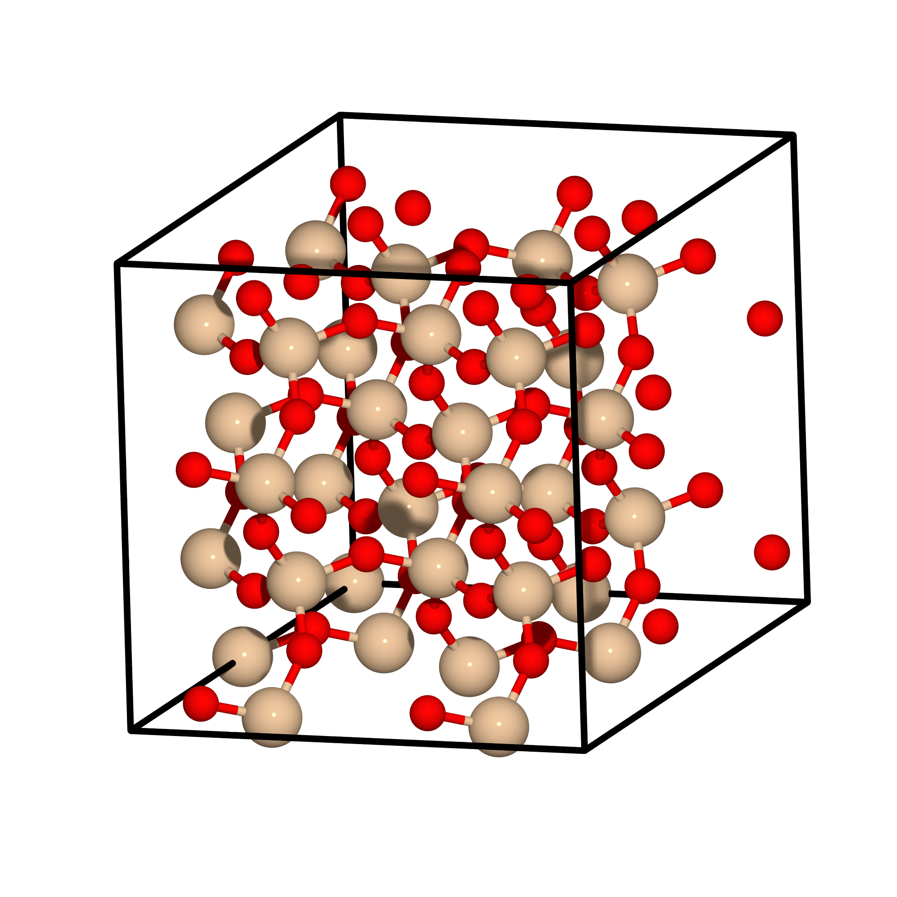

Tutorial 10: Simulation cell relaxation¶
Version: all versions Chris-Kriton Skylaris
Introduction¶
This tutorial demonstrates how to Use ONETEP to relax the simulation cell of a crystalline material.
Cell relaxation of bulk crystalline silica¶
This calculation will relax the lattice of a silica (SiO2) simulation cell, which is depicted below:

Input file keywords¶
The input file, which is provided, is called "silica96.dat" and contains 96 atoms in total.
To perform cell relaxation the task STRESS keyword is required.
You will notice in the input file also the following keywords related to the cell relaxation:
1 2 3 4 5 | |
Where stress_tensor T instructs the code to compute the
stress tensor, while the calculation of elestic constants is
trned off with stress_elasticity F. In this calculation
the
simulation cell will be relaxed (in order to determine the
optimal lattice vectors) and this is
denoted by stress_relax T. In this calculation, in addition
to the simulation cell we want do relax also the coordinates
of the atoms and for this we use the keyword
stress_relax_atoms T. It is worth noting here that the
atomic coordinates would also be relaxed if the
stress_relax_atoms was set to F (False), but in this
case they would only be "stretched" to be commensurate
with the change in the lattice vectors, in other words
they would retain the same fractional coordinates.
On the other hand if the stress_relax_atoms is activated
the coordinates of the atoms are fully relaxed and are not
comstrained to remain equal to the fractional coordinates
they had at the start of the calculation.
Finally the stress_assumed_symmetry tetra1 instructs the
code to assume a particular symmetry for the simulation cell
and maintain this symmetry during the cell relaxation.
Is the symmetry of the cell is known and is supported
by the code (see the user manual) is is important to
activate it with this keyword as it will significantly
reduce the number of single point energy calculations that
will be performed.
Running the calculation¶
Now run the calculation and examine the output. Lets examine the output step by step noting the various stages of the calculation.
At the very beginning some information about the initialisation of the calculation is produced such as:
PSINC grid sizes: information about the grids used for the psinc basis functionsAtom SCF Calculation for...: here the code initialises the NGWFs with atomic orbitals created specificaly for the valence electrons of the chosen pseudopotentials and confined within the NGWF spherical regions.STRESS: undistorted cell: this is the beginning of the very first energy calculation from which calculations with applied stains will be subtracted to compute the stress tensor.Atomic positions optimised prior to stress calculation: a geometry relaxation is performed first since we have specified stress_relax_atoms T
You will notice that this calculation takes
30 NGWF iterations to converge as a very tight convergence
criterion for the NGWFs (ngwf_threshold_orig 1.e-7) has been applied in the input. This was done to ensure very accurate forces and it may be a bit extreme, but it is better to be on the safe side.
After this energy evaluation the code computes the forces and compares them with the threshold that has been defined for geoemetry relaxation.
In this calculation you will notice that the
forces are small and below the tolerance
(|F|max 1.e-3 Eh/Bohr)
that has been set for the convergence of the
geometry. As a result the code reports that the geoemetry
relaxation has been completed with the
message Geometry optimization completed successfully.
Calculation of the stress tensor¶
Then the calculation proceeds to evaluate the energy of the
system at different distortions (strains) of
the lattice vectors in
order to compute the stress tensor.
The beginning of this procedure is denoted
by the STRESS: distorted cells message.
The stress tensor computed is summarised at the end of the first iteration of cell relaxation:
1 | |
This stress tensor is now used to change the simulation cell. Again a geometry relaxation is performed which converges at the first step. Then several single point energy calculations follow to compute a new stress tensor until we obtain the summary of the second iteration:
1 | |
Finally, we see that in the third iteration the cell has been relaxed. The relaxed cell is printed:
1 2 3 4 5 | |
This completes tutorial 10.